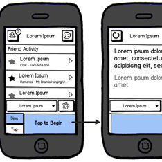
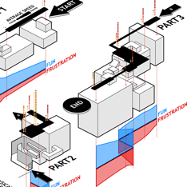
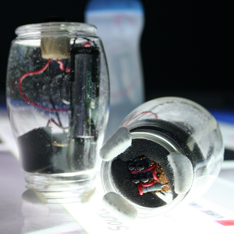

People have a lot of defenitions about what UX actually means. For me, the key role for a User Experience designer is two fold. The first is that a UX designer needs to have a deep understanding of the intended feel and outcomes of the product. Maintaining a consistant feel to the interactions across your product is as important as a consistant visual style. It lends conherency to the experience and lets users focus on what they're trying to do. The second goal of a UX designer is making sure those interactions are useable, enjoyable, and useful. Training the user on how your product works is of critical importance.
I worked as an interactive designer with Jesse Lindsley and the team at Thrust Interactive for much of 2010 and early 2011. While at Thrust I worked on developing an internal project, Stimuli.st as well as worked with a variety of clients designing interactive solutions. On Stimuli.st I developed wireframes and flows for both our web and mobile clients, working with or UI artist to develop mocks and assets for development. I also functioned in a product strategy role, working with Jesse to develop the larger plan for Stimuli.st's design direction, development, release, and maintence.
In my work with Thrust's clients, I spent a large amount of time meeting with stakeholders to understand their goals and challenges. I would then work with the client and the team at Thrust to help develop web and mobile solutions for their needs. I did the initial design, client pitch, and flows for this Arthritis is Unacceptable visualization", though I had to move onto other projects as development was beginning.
I hold a BFA from the Savannah College of Art and Design in Interactive Design and Game Development. My focus within the major was user-centric interactive design. In my time at SCAD I developed a variety of projects, honing my skills as a user experience and interactive designer. Those proects included interactive banner adds, flows for a mobile twitter client, a redesign of the National Air and Space Museum object collection webpage, numerous game UIs, informational graphics, and large scale interactive installations.
